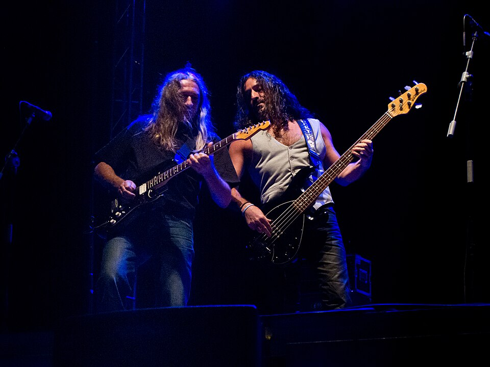
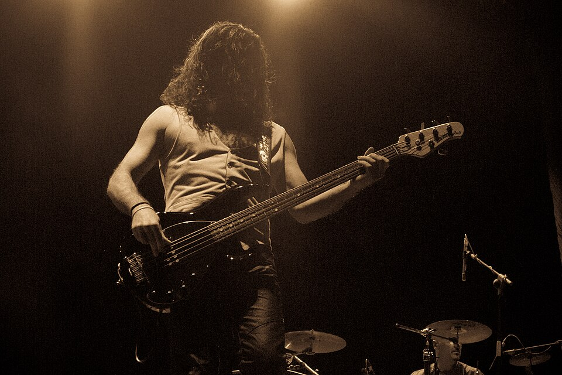

Rafa J. Vegas
Bajo · 1987–2018

El pilar invisible
Rafa J. Vegas no es solo el bajista más longevo de Rosendo, es uno de los pilares que explican por qué el proyecto se mantuvo firme durante más de tres décadas. Entró en la banda en 1987, coincidiendo con «A las lombrices», y ya no se movió de ahí.
Desde entonces, su bajo se convirtió en el suelo sobre el que todo caminaba: guitarras, letras y actitud. Sin estridencias, sin postureo. Trabajo y compromiso.
Treinta años sosteniendo el rock
Rafa participó en prácticamente toda la discografía de Rosendo y recorrió el país de arriba abajo en cientos de conciertos. Su sonido es reconocible por su solidez: líneas claras, pegada constante y una sensación de seguridad que nunca abandona a la banda.
No busca protagonismo, pero cuando el bajo falta, se nota. Esa es la marca de los músicos grandes.

Estilo y filosofía
El estilo de Rafa J. Vegas se basa en el groove y en el respeto absoluto por la canción. Cada nota está donde tiene que estar, sin adornos innecesarios ni alardes técnicos.
Su forma de tocar encaja a la perfección con el espíritu de Rosendo: rock directo, honesto y sin maquillaje.
«Mi trabajo siempre fue sostener la canción y que todo caminara recto.»
— Rafa J. Vegas